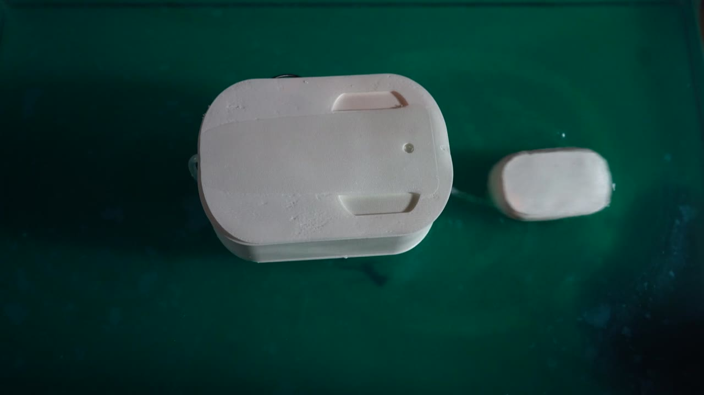
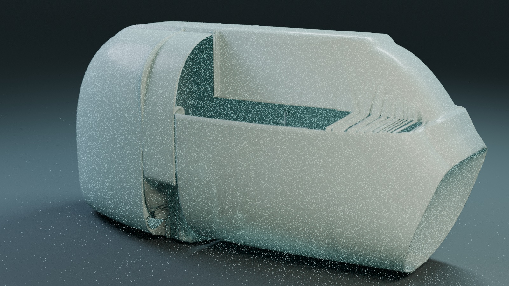
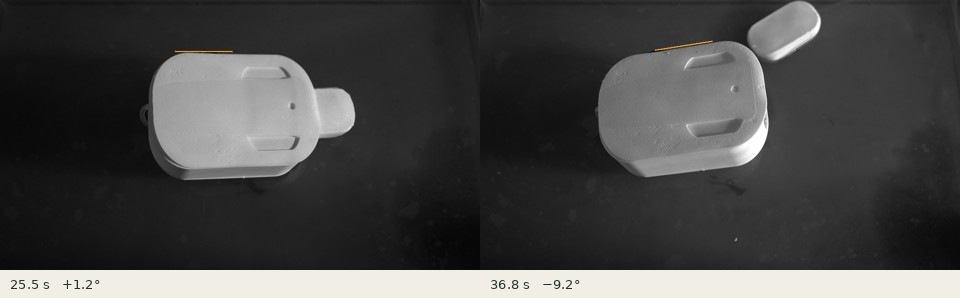
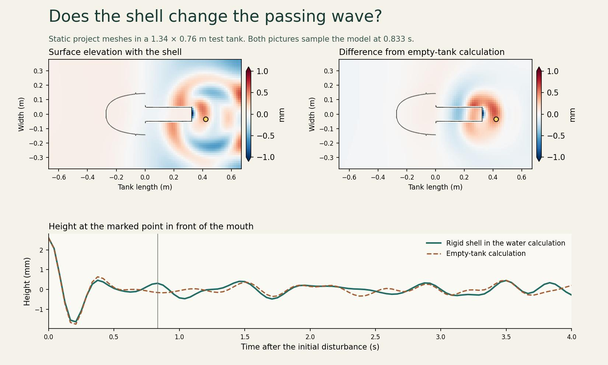

What the camera saw
At 25.9 seconds in the first tank recording, a strip of green appears between two pale silhouettes. A threshold applied to the image now finds two regions. It was already possible to see the smaller body while it was still held. Which moment a viewer calls birth depends on what they are waiting to see.


Sources in the exhibition edit
| Film time | Image and provenance |
|---|---|
| 0–8 s and 70–79 s | The artist’s recording of Water Beings. Seven chromatic generations reproduce through contact. Remnants alter the space available for later growth. The film excerpts show moments within that ecology. Project · Recording |
| 8–18.4 s | Water inflates a bladder and a ball leaves a pink test fixture. The audio comes from this camera recording. Bench experiment |
| 18.4–24 s | A separate workshop trial shows a hand operating the phone. The 2025 final assembly account documents phone control of the pump in the first tank demonstration. Control trial · Workshop record |
| 24–59.967 s | One overhead recording, in source order and at source speed. The closer framing uses a fixed crop of the 4K file. The wide frame returns as the bodies move apart. First prototype |
| 59.967–65.133 s | A different hull in a different tank. The excerpt comes from the artist’s Creative AI overview. Second prototype |
| 65.133–70.133 s | Held artwork preview published in the IEEE VISAP catalogue. The image places the tank beneath a digital population. The catalogue gives no camera, capture location or image-making method. The exhibition catalogue describes a touch-assisted design. VISAP catalogue |
The permanent-caption MP4 identifies each source throughout its shot and includes the project credit in the closing image. It can play in a silent room without a separate caption file. The shorter 56-second cut retains a 36-second overhead view and omits the two bench inserts. The arrival controls and the printed rehearsal sheet use the 79.15-second exhibition clock. The 20-second contact study moves from detail to wide view within the same overhead take. Download the source register with rendition sizes and checksums.
Sound and measurement
In the 79-second edit, the lower pitch rises as the long upper edge of the carrier turns in the camera image. It holds after the child crosses back. A second tone becomes audible when an image threshold detects a gap. Its pitch and stereo position follow the distance in pixels. The two hulls can overlap again while the carrier keeps its changed orientation. The score describes a way of looking. The source audio is too quiet to identify an individual actuator.
The artist’s separate workshop tests document pump-driven locomotion and a tube used to redirect the jet. The later project film describes touch changing the pump drive. No actuator logs are synchronized to these edits. Printing a child inside the carrier belongs to the design research. Artist’s documentation · Download the gap measurements · Download the carrier angles

Weight in water
Before filming the birth, Wang placed a pump and a pink printed shell in a shallow pan. Ripples reach the rim while the shell stays near the same spot. The next recording follows a pump held in sponge. The operator’s hand and wires come into view. The tank, support and camera all change between the tests.
These 26 seconds preserve both complete camera takes, their original aspect ratios and quiet synchronous sound. The workshop journal attributes the first result to the shell resting on the floor. The second take gives the pump a different support. Neither film measures thrust, and the wire remains part of what moved.
Download the workshop diptych · 26 s · Source frames and sound
Light at the rim
In the optical test the printed shell geometry stays still. A moving water surface distorts the slot edges and the softbox reflection at the mouth. The broad white reflection can look like an escaping object. That ambiguity is one reason the film uses the actual tank recording for the release.
Silent four-second geometry study. The water motion is prescribed. The closer view reveals how a narrow area-light reflection can resemble another object. The bounded model then tests a decaying surface disturbance at the lip. Close lighting test · 1 s · Dispersive wave test · 1.5 s · Equations and limitations · Matched control frames · Three cross-light positions


Move the lamp, keep the shot
Watch below the lip. A diagonal bar in the first model is the lamp reflected in the disturbed water. Raising the strip from 0.56 to 0.82 m removes most of it. Both views use the same 24 model times. The second half enlarges the lower corner. Each one-second interval repeats three times for comparison. Download the silent light comparison. Watch the complete four-second raised-light take to follow the reflection through one uninterrupted disturbance.
Can the camera see the water meet the shell?
In the earlier model the wave continued straight through the printed geometry. Here the fixed shell interrupts the flow. At a point just outside its mouth, the two calculations differ by less than half a millimetre in the first second and a half. Through the camera the clearest change is in the apparent shape of the grooves. The actual release in the main film remains the artist’s overhead recording.

Geometry, camera tests and limits · Download the three probe traces
Biological and film references
Pipefish change the fluid conditions in a paternal brood pouch. Young moon jellies can move water between adjacent lobes as part of an effective paddle. These studies pose two distinct questions for a camera: what difference does a body maintain across a boundary, and where does its moving surface end? The pump, the printed hull and an animal’s membrane have different mechanisms. Ripley · Feitl et al. · Preston et al.
Elselijn Kingma’s account of gestational parthood led to a change in the script. A first independent movement no longer decides whether the newborn counts. Painlevé’s account of waiting to film a seahorse birth brings the apparatus that maintained the observation into view. Mary Kelly’s records of feeding and washing, and Mierle Laderman Ukeles’s exhibition proposal for maintenance work, inform the reset bench and the operator’s log. Kingma · Painlevé · Kelly archive · Ukeles
Credits
Water Beings and original tank and workshop recordings by Ruipeng Wang. The Born, Not Made project credits Ruipeng Wang for direction, the initial prototype, software and hardware. Vera Yu Wu contributed to narrative and visual expression, Di Wu to printing material and robotic arm work, and Kexin Wang to arm control. Jimmy Haochen Xu contributed visual development and Unreal Engine work. Leo Liu composed background music for the source project. The new image-derived score is specific to this study. The archive distinguishes project-wide roles from the credits of particular videos.
All footage used here is project material. The biological, philosophical and film references inform the edit. Their images and soundtracks are not reproduced. The rendering studies and gallery views are proposals. The three earlier directions, Witness, A Stranger and The Night Shift, remain alternatives.